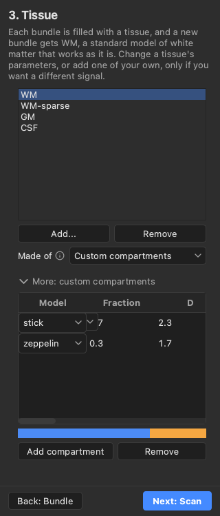
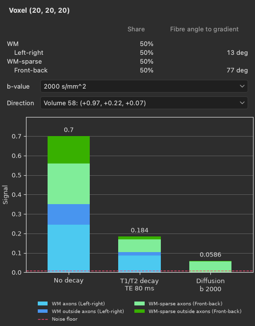

Simulation#
Larmor simulates diffusion-weighted images of phantoms. A phantom is a voxel grid filled with tissues. Each tissue is a sum of compartments, such as a stick for the water inside the axons and a zeppelin for the water around them, and fibre bundles and tissue maps say where each tissue lies on the grid. The simulation computes the signal of every voxel for a given scan, and adds noise if you ask for it. It saves the ground truth beside the images: how much of each voxel each tissue and bundle fills, and where the fibres point.
What it is for#
A simulation shows how the diffusion signal forms. The signal of a voxel is the product of several factors, namely the share of the voxel that each tissue fills, the fraction and proton density of each compartment, the T1 and T2 relaxation, and the diffusion attenuation of each compartment along the gradient. Larmor can split the signal of one voxel into these factors, so you can see what a longer echo time, a higher b-value or a different tissue does to it.
A simulation also helps to design a protocol. The same phantom can be scanned with different shells, numbers of directions, timings and noise levels, and the images and fits of each scan can be compared before any data are acquired.
Finally, a simulation gives a known answer for testing a processing pipeline. The true fibre directions and tissue fractions are saved with the images, so you can compare the output of each step, such as the peaks of fitted FODs, with them voxel by voxel.
There are three ways to run a simulation: from the command line, from Python, and in the phantom editor of BrainViewer.
From the command line#
Larmor comes with a phantom called crossing, in which two fibre bundles cross at 90 degrees. The bundles are
named after the direction they run in. Left-right runs along x, from the left of the head to the right, and
Front-back runs along y, from the front to the back. The following command simulates the phantom with noise, and
writes the images, their gradients and the ground truth into a new folder:
lar simulate crossing crossing-sim --snr 30 --seed 1
To simulate a phantom file of your own, give its path in place of the name. The quick start goes through this run and opens the result in the viewer.
From Python#
The package larmor.simulation builds phantoms and scans, simulates them and
saves the results. The following code simulates the same phantom from Python and saves the result into another
folder:
from larmor.simulation import example_phantom, save_simulation, simulate
loaded = example_phantom("crossing")
assert loaded.protocol is not None # the phantom file holds its scan
result = simulate(loaded.phantom, loaded.protocol, snr=30, seed=1)
files = save_simulation(result, "crossing-python", bundle_names=loaded.bundle_names)
print(files.dwi[0], files.peaks)
loaded holds the phantom and the scan protocol stored with it. A phantom file can also be saved without a scan,
and then loaded.protocol is None. result holds the images with and without noise, and the ground truth, which
save_simulation writes next to the images. Passing bundle_names saves the names of the bundles, Left-right and
Front-back, in the folder’s phantom file, so that the viewer shows the bundles by these names. The
simulation guide shows how to build a phantom with your own tissues, bundles and scan.
In the phantom editor of BrainViewer#
The viewer has a phantom editor, in which you draw bundles in the 2D views, choose the tissues, set the scan and run the simulation. The following command opens the phantom file that the command-line run above saved:
lar bv --phantom crossing-sim/phantom.json
By default the editor shows its guided layout, which takes you through a first simulation in five steps, called Grid, Bundle, Tissue, Scan and Run. Each step has a short explanation, and gets a check mark once it is ready. When the run ends, the images, the masks and the true fibre directions open in the viewer.


The Signal breakdown panel, which you open with Ctrl+6, shows as three stacked bars how the signal of the voxel under the pointer comes about. It updates with every change you make in the editor, without a new run.


The viewer’s Phantoms guide describes the editor and the panel in full.
Where to go next#
The simulation guide shows how to build a phantom in Python, and describes the phantom
file, the options of lar simulate and every file of the output folder. The Background page
Simulating diffusion MRI explains what the simulation computes and what it leaves
out, and cites the papers of its models. The gallery has three runnable examples. One simulates
two crossing bundles, one splits
the signal of one voxel into its factors, and one
checks a pipeline against the ground truth by comparing fitted
FOD peaks with the true fibre directions.